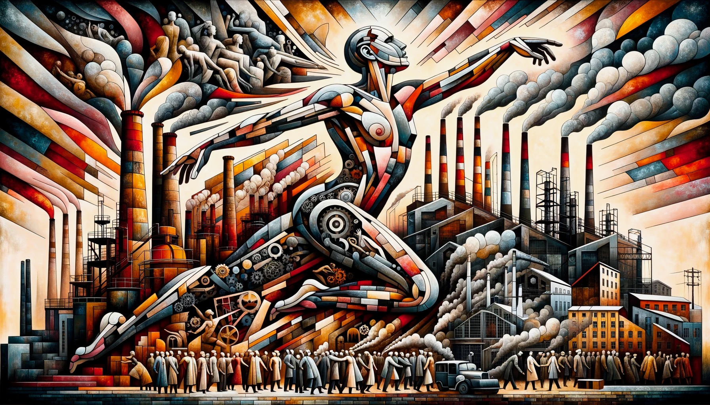

Welcome everyone to our blog! We aim to explore, through wandering and experiment and introspection and interview alike, the nature of consciousness, what it means to do math, and how AI fits into all of this. We are also especially interested in considering the role and implications for education.

"There stands, stark and unyielding, the image of modern Prometheus, bound not by chains, but by the very gears and pistons of his own creation."—ChatGPT*AI, Math, Zombies Oh My by Gizem Karaali, Kamden Baer, Oscar Scholin is licensed under Attribution-NonCommercial 4.0 International